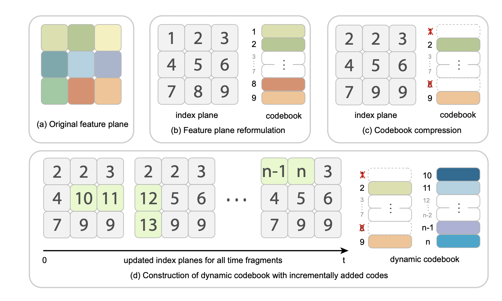

About Me
I am a third-year undergraduate student from Chu Kochen Honors College at Zhejiang University with an overall GPA of 3.98/4.0. Currently, I'm working as a research intern at the 3D Vision Group of State Key Laboratory of CAD&CG, supervised by Prof. Xiaowei Zhou. And I'm also fortunately advised by Prof. Yuxiong Wang as an on-site research assistant at CS Dept of UIUC. My research interest lies in the field of 3D Computer Vision, particularly including diffusion-based generation and 3D reconstruction, as well as their applications in mixed reality and robotics.
Research Experiences
- State Key Lab of CAD&CG, Department of Computer Science.
Zhejiang University, CN
Supervised by Prof. Xiaowei Zhou (Jun.2022---Present) - Semantics-guided view synthesis of natural scenes from single-view images.
- Relightable and animatable neural avatar from sparse-view video.
- Compact neural volumetric video representations with dynamic codebooks.
- Yu-Lab, Department of Computer Science.
University of Illinois at Urbana-Champaign, USA
Supervised by Prof. Yuxiong Wang (Feb.2023---Present) - Instruction-guided dynamic scene editing with multi-dimension consistency.
- Advanced Perception on Robotics and Intelligent Learning Lab.
Zhejiang University, CN
Supervised by Prof. Yong Liu (Dec.2021---May.2023) - Multimodal-driven talking face generation via a diffusion-based generator.
Publications and Preprints
*equal contribution; ♯corresponding author.


Selected Awards and Honors
-
2020 - 2021,National Scholarship, Ministry of Education of P.R. China (Top 1%)
-
2020 - 2021,First-Class Scholarship for Academic Excellence of Zhejiang University (Top 3%)
-
2021 - 2022,Government Scholarship for Academic Excellence of Zhejiang Province (Top 3%)
-
2021 - 2022,The Supcon Scholarship, Supcon Technology Group (Top 5%)
-
2022,National First Prize, China Undergraduate Mathematical Contest in Modeling
-
2022,International Gold Prize, International Genetically Engineered Machine Competition
-
2022,First Prize, Supcon Cup College Student Robot Competition (Top 1 out of 37 teams)